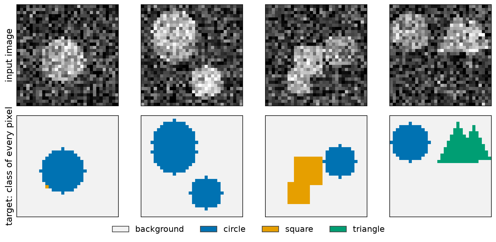
Advanced Machine Learning
This slide deck is still under active development. Expect changes before it is finalized.
One label per pixel
So far a CNN has turned a whole image into one answer: a class label or a feature vector.
The question:
How do we get a prediction at every pixel, instead of one prediction per image?
Shrink the image into a small summary with a CNN, then grow it back to full size, predicting a class at every pixel.

An encoder we know, and a decoder that upsamples
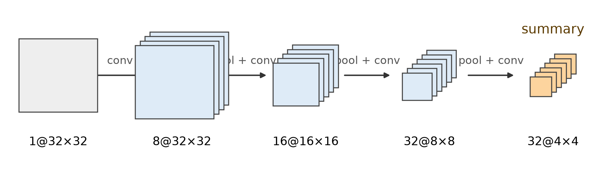
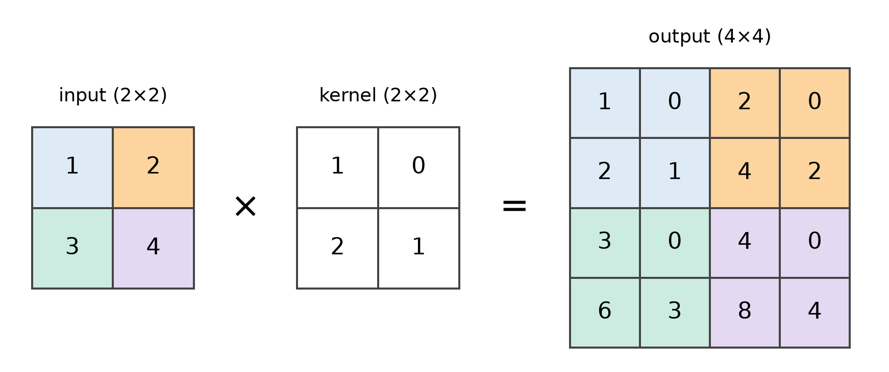
\text{output size} = (n - 1) \cdot s + k
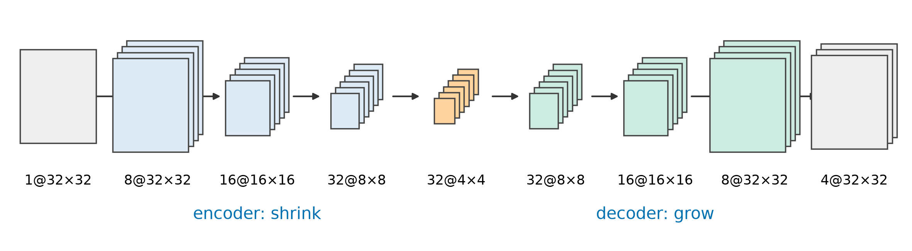
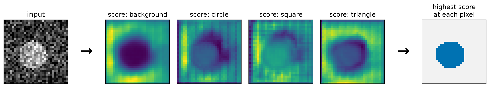
L = -\frac{1}{H W} \sum_{i,j} \log p_{ij}(y_{ij})
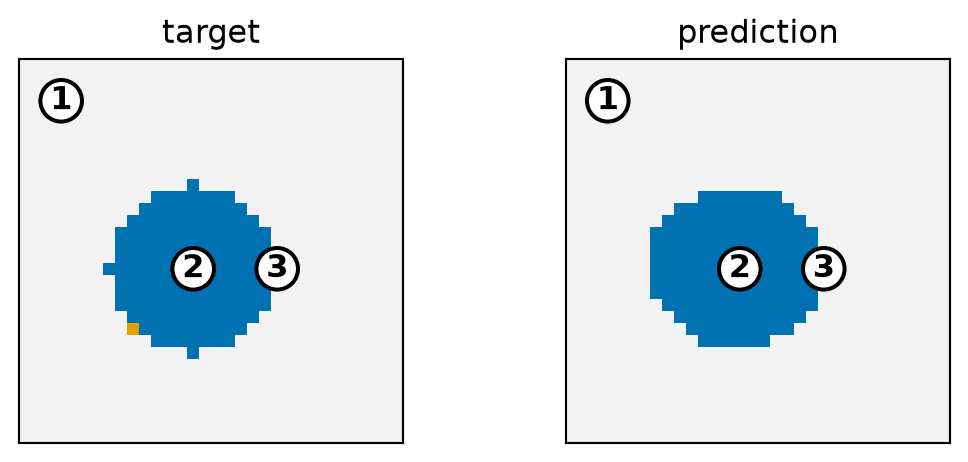
| Pixel | True class | Scores | Softmax | Loss |
|---|---|---|---|---|
| 1 | background | 27.7, 5.7, 2.0, 7.2 | 1.00, 0.00, 0.00, 0.00 | 0.00 |
| 2 | circle | -3.6, 2.2, 1.3, 0.8 | 0.00, 0.61, 0.24, 0.14 | 0.49 |
| 3 | circle | 0.6, 0.1, -1.4, -1.5 | 0.53, 0.33, 0.07, 0.07 | 1.12 |
def conv_block(c_in, c_out): # two 3x3 convs, same size
return nn.Sequential(nn.Conv2d(c_in, c_out, 3, padding=1), nn.ReLU(),
nn.Conv2d(c_out, c_out, 3, padding=1), nn.ReLU())
def down(c_in, c_out): # halve the height and width
return nn.Sequential(nn.MaxPool2d(2), conv_block(c_in, c_out))
def up(c_in, c_out): # double the height and width
return nn.Sequential(nn.ConvTranspose2d(c_in, c_out, 2, stride=2),
conv_block(c_out, c_out))
encoder = nn.Sequential(conv_block(1, 8), down(8, 16), down(16, 32), down(32, 32)) # 32x32 -> 4x4
decoder = nn.Sequential(up(32, 32), up(32, 16), up(16, 8)) # 4x4 -> 32x32
model = nn.Sequential(encoder, decoder, nn.Conv2d(8, 4, 1)) # 4 scores per pixelF.cross_entropy(model(images), masks): scores of shape (N, 4, 32, 32) against integer classes of shape (N, 32, 32). It averages over every pixel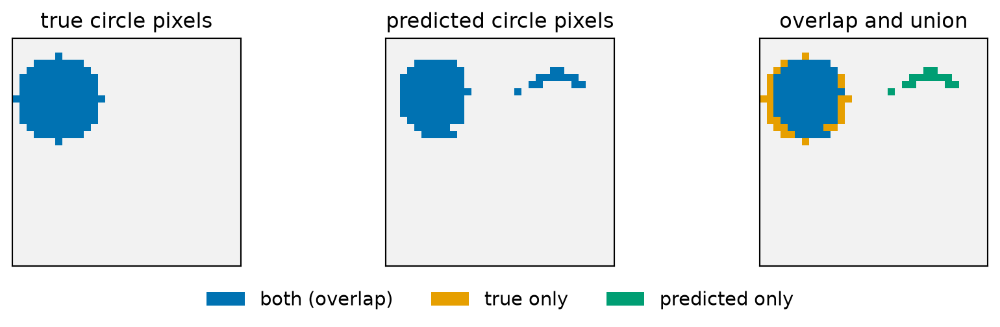
\text{IoU} = \frac{\text{pixels in both}}{\text{pixels in either}} = \frac{87}{126} = 0.69
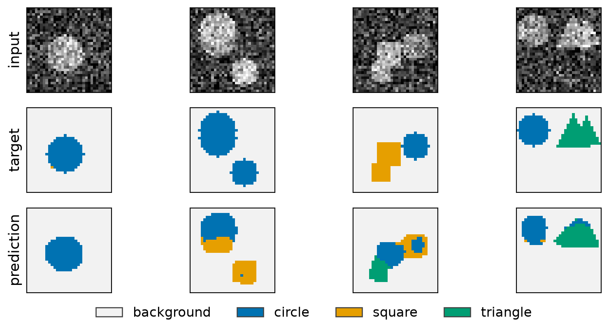
The summary is too coarse for exact edges
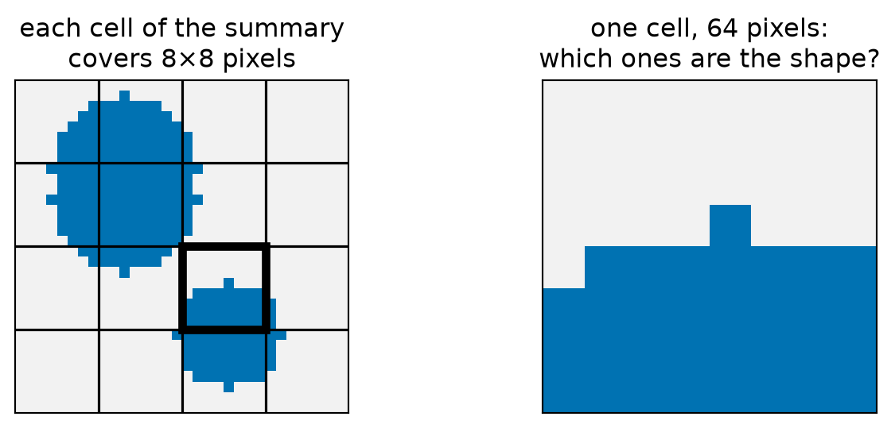
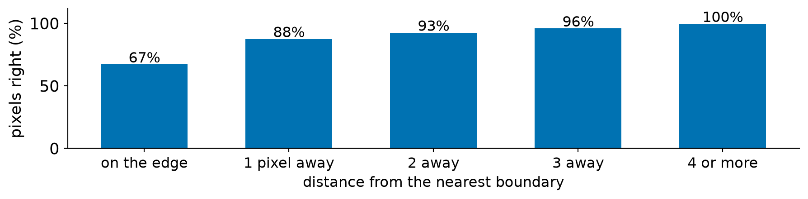
The question:
How can the decoder recover detail the summary lost?
Let the decoder look back at the encoder’s feature maps, not only at the final summary.
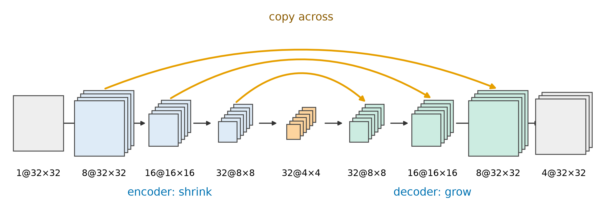
| Decoder level | Upsampled map | Encoder map copied across | Stacked | After the conv block |
|---|---|---|---|---|
| 8×8 | 8×8×32 | 8×8×32 | 8×8×64 | 8×8×32 |
| 16×16 | 16×16×16 | 16×16×16 | 16×16×32 | 16×16×16 |
| 32×32 | 32×32×8 | 32×32×8 | 32×32×16 | 32×32×8 |
torch.cat([self.up(x), skip], dim=1), and forward keeps each encoder map to hand across. Same loss, same optimizer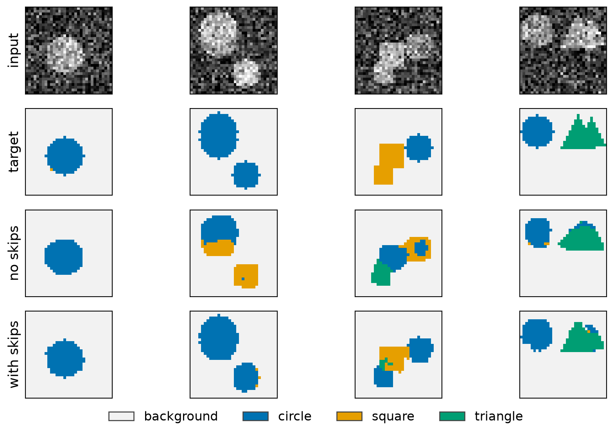
| Model | Pixels right | Mean IoU | Pixels on an edge right |
|---|---|---|---|
| No skips | 91.2% (90.4% to 92.2%) | 0.63 (0.60 to 0.66) | 67% (66% to 69%) |
| With skips | 95.8% (95.5% to 96.1%) | 0.79 (0.77 to 0.80) | 86% (85% to 87%) |
| ResNet shortcut | U-Net skip | |
|---|---|---|
| Copies | The input of a block | An encoder map |
| Delivers it to | That block’s output | The decoder (same size) |
| Combined by | Adding | Stacking (concatenating) |
| Main purpose | Easier training | Recover lost detail |
When the small summary is the point
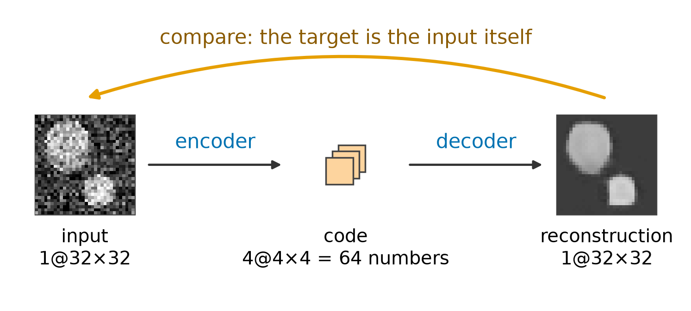
# conv_block, down and up: the helpers from the segmentation network
encoder = nn.Sequential(conv_block(1, 8), down(8, 16), down(16, 32), down(32, 32)) # 32x32 -> 4x4
decoder = nn.Sequential( up(32, 32), up(32, 16), up(16, 8)) # 4x4 -> 32x32
code = nn.Sequential(nn.Conv2d(32, 4, 1), nn.Conv2d(4, 32, 1)) # squeeze to 4 channels
model = nn.Sequential(
encoder,
code,
decoder,
nn.Conv2d(8, 1, 1) # 1 value per pixel
)
loss = F.mse_loss(model(x), x) # the target is x itself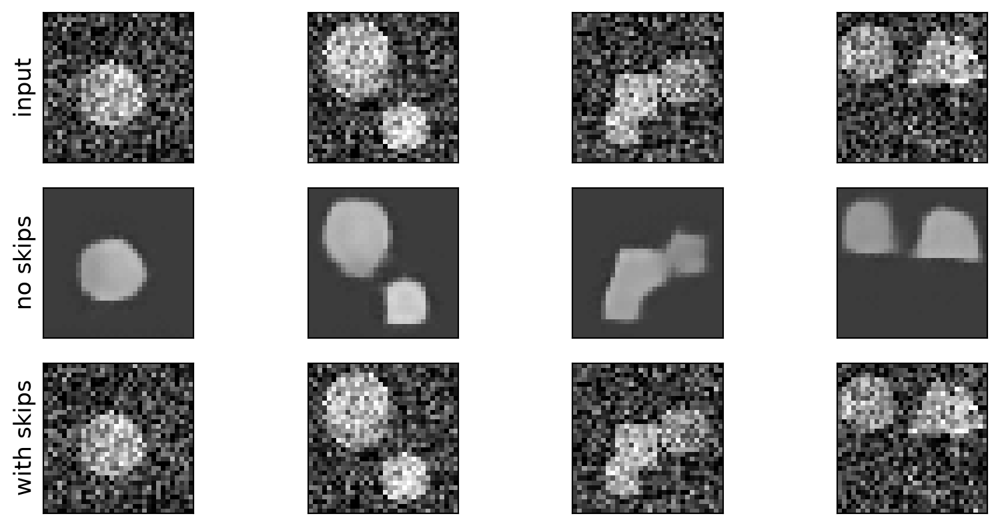
| Model | Error against its input | Error against the clean image |
|---|---|---|
| Copy the input | 0.0000 | 0.090 |
| Autoencoder, no skips | 0.1003 | 0.013 |
| Autoencoder, with skips | 0.0001 | 0.090 |
Same shape, different task
| Task | Input | Output at each pixel | Loss |
|---|---|---|---|
| Segmentation | A photo | A class | Cross-entropy |
| Colorization | A grayscale image | Two color values | Squared error |
| Denoising | A noisy image | The clean value | Squared error |
| Depth estimation | A photo | A distance | Squared error |
| Use | Output | What we use | Loss |
|---|---|---|---|
| Classify an image | One class | The last features, flattened | Cross-entropy |
| Pretrained features | One vector | The last features, as an embedding | Whatever the new task needs |
| Segment an image | A class at every pixel | Encoder, decoder, and skips | Cross-entropy at every pixel |
| Predict a value per pixel | A number at every pixel | Encoder, decoder, and skips | Squared error |
| Autoencode an image | The image again | Encoder, small code, decoder | Squared error |
CST463 · Advanced Machine Learning